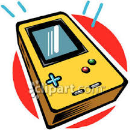
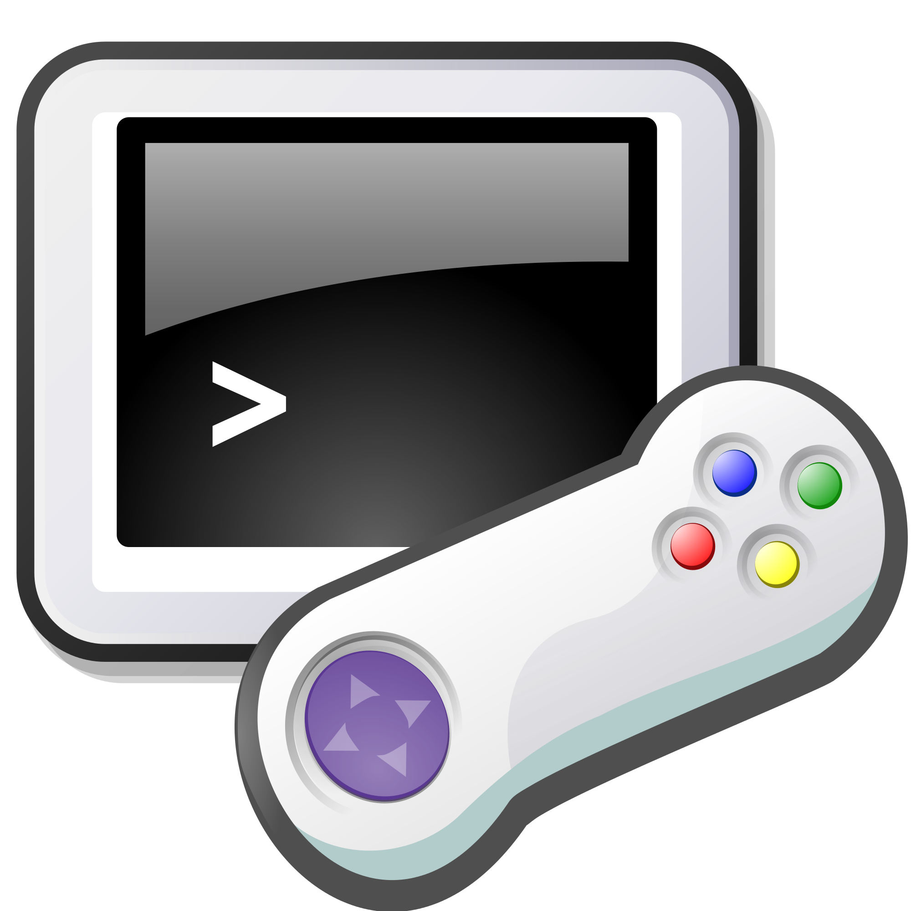
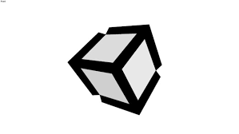
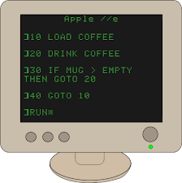

Overview
For this project I would like to build a game using Unity software. Game development has been an interest of mine. In high school I took a game design class and I learned about the basics of game theory. I will be able to apply my knowledge of programming and game design to creating a game. Knowledge of Unity will be very useful if I go into the game industry because it is very widely used for game development. The most important skill I would gain from this project would be the ability to learn new programming languages quickly. This skill is important as different jobs will all use different languages and I will need to learn how to use them quickly to be an effective worker.
Motivation

The videogame industry is very big and is very profitable. There are one hundred twenty-five million steam accounts. Posting a game on steam and if it becomes popular it will be very profitable. If I were to go into the videogame industry having relevant experience would be very helpful when applying for a job. Also, I can show them this project as an example of my past work. This project will be very interesting because I have never used Unity software before and I would like to learn how to use it. Knowledge of Unity will be very useful as many game development studios use this software.
Description

The game will be available to download on steam for windows computers.
It will run like any windows program. Players will be able to download
the game and play it on their computers. It will be a simple game, so
laptops will be able to run it.
When the game is opened it will show the title screen. Then it will show
the options of start, continue, and options. Start will start the game
from the beginning. Continue will load a save and start the game from
that point. The settings menu will have options for controls, sound,
and lighting.There will also be an option to change the games resolution
and window size such as to fill the window, stretch to fit, or keep same
ratio. Also, that game will have alternate color pallets for people with
color blindness, so they can distinguish the different objects of the game.
The game will be a platformer with two control methods. One will be with
the arrow keys on the computer. You will move left and right and jump. As
you move, the background will scroll in the opposite direction. Also, the
further background will scroll with half the speed of the foreground to
give the illusion of distance. The obstacles in the game will be pits,
traps and enemies. Pits will be gaps in the stage that will kill the
character if they fall into it. Traps will be objects on the stage that
will damage the character if they encounter them. Enemies will be characters
controlled by the computer that will either go in the direction of the
character, walk in a set path, or both. There will be an option to save
the game
The game will be broken into levels that scale in difficulty as it progresses.
Each level will be broken down in two acts. In the first act there will be
platforming challenges and enemies to either avoid or defeat to pass. In
the second act of every level there will be a boss. The win condition of
the second level will be either to kills the boss or to make it to the
checkpoint. The player will be able to decide if they want to fight or
they want to flee from the boss. In all cases fleeing from the boss will
be of a similar difficulty to fighting the boss.
The game will have a pause menu stat will be access bale at any point
while the game is running. The pause menu will pause the game at that
moment. Form the pause menu the player will be able to continue the game,
save the game or exit. The save game feature will store the current level
and act. When a save is loaded the game will bring the player back to the
beginning of the act that they were playing when they saved. Exiting the
game will bring them back to the main menu where they can continue the game,
start a new game, or close out of the program
Tools and Technologies
The first thing I will need is a computer which I will use to create the game. I will be using my laptop as it will be good enough to make a game with two-dimensional graphics. The software I will be using to make the game is Unity. To use Unity, I will need to learn how to program with C#. There is a free version of Unity available to download online. Drawing programs such as paint can be used for the art design and I can use music making software for the in-game sounds. This software can be found online, and lite versions can be downloaded for free.
Skills Required
The Unity program uses C# which I will need to learn to use the software. I will also need to learn how to use the other features of Unity as well. For the visual element of the game I will need to learn how to draw. Also, for the audio I will need to learn how to use audio editing software and music software. I already know how to program with C and C++ so learning C# should not take too long. I do not have that much experience drawing, but I can learn to draw simple characters and backgrounds. I have no Idea how to make music, but I can probably make some very stock or generic tracks.
Outcome
My fist goal is to finish the game and for it to run without any glitches or the game crashing. For the game to be successful it will be a game in complete working condition and it will be available on an online distribution service such as steam, google play, or iOS store. The game will be more successful if it sells a lot and it makes a lot of money. The least I will get out of this project is that I will be able to put this in my resume as relevant experience for future jobs. Also, the knowledge I will have gained will be useful If I go into the game industry in the future.